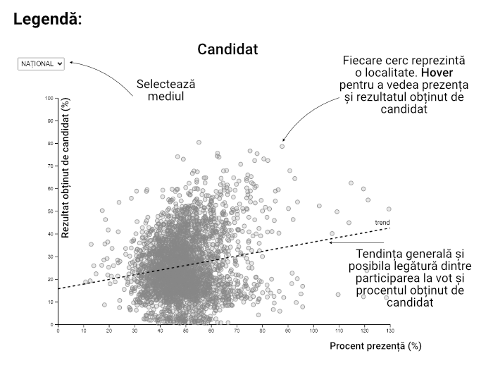

Candidații la alegerile prezidențiale din 2024 au avut rezultate care au variat uneori puternic între mediul rural și urban, dar și prin prisma prezenței la vot. HotNews.ro a analizat toate cele peste 3.000 de localități din România și a corelat datele de prezență cu rezultatul fiecărui candidat la alegeri.
La alegerile prezidențiale din noiembrie 2024, rezultatele oficiale au arătat așa:
Călin Georgescu - 2.120.401 voturi (22,94%)
Elena Lasconi - 1.772.500 voturi (19,18%)
Marcel Ciolacu - 1.769.760 voturi (19,15%)
George Simion - 1.281.325 voturi (13,86%)
Nicolae Ciucă - 811.952 voturi (8,79%)
Celălalt top al alegerilor prezidențiale
HotNews.ro a analizat rezultatele în toate cele 3.187 de UAT-uri (Unități Administrativ Teritoriale) din țară și a descoperit un alt clasament în funcție de localitățile „câștigate” de candidați, dar și o corelație de cum prezența la vot a însemnat un scor mai bun sau mai slab pentru unii candidați.
După numărul de localități „câștigate”, topul arată așa: Marcel Ciolacu (1.327), Călin Georgescu (1.031), Nicolae Ciucă (378), Kelemen Hunor (254), George Simion (108) și Elena Lasconi (88).
Pentru fiecare localitate, HotNews.ro a corelat prezența de scorurile candidaților și a calculat o „linie de trend”.
Pe fiecare din graficele de mai jos (scatter plots), linia punctată reprezintă o linie de trend, adică o estimare matematică a relației dintre prezența la vot și scorul electoral al candidatului respectiv.
Mai simplu spus, această linie ne arată dacă există o tendință generală: de exemplu, dacă un candidat obține rezultate mai bune în localitățile unde prezența este mai mare sau, dimpotrivă, dacă performează mai bine acolo unde oamenii merg mai puțin la vot.
Prezența la vot și rezultatele candidaților
O linie ascendentă (orientată în sus de la stânga la dreapta) sugerează că votul candidatului crește odată cu prezența, în timp ce o linie descendentă (orientată în jos de la stânga la dreapta) indică o relație inversă.
Linia este calculată folosind o metodă numită regresie liniară, o formă simplă de interpolare, în care se trasează o linie dreaptă ce trece printre toate punctele din grafic. Această linie nu prezice rezultatele exact, dar oferă un indiciu despre direcția generală a datelor și ne ajută să înțelegem mai ușor dacă prezența la vot pare să aibă sau nu legătură cu succesul unui candidat.
Așadar, privind graficele de mai jos, vedem cum Ciolacu și Ciucă au performat la alegerile prezidențiale în special în mediul rural, acolo unde o prezență mai mare la secțiile din satele României însemnau un scor mai bun și pentru cei doi candidați ai celor mai reprezentate partide în teritoriu.
La popul opus, atât în rural, cât și în urban, George Simion și Călin Georgescu au avut scoruri mai mici în localitățile unde prezența a fost mai ridicată.
Un caz aparte îl regăsim la Elena Lasconi, acolo linia de trend este aproape neutră, asta pentru că deși a câștigat în doar 88 de localități, ea a adunat grosul voturilor sale în special din mediul urban. Astfel, pe mediul urban, linia de trend este una ascendentă, simbolizând un scor mai bun pe măsură ce prezența a fost mai mare.
